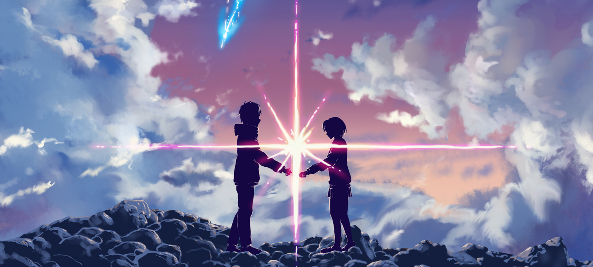

Любимые фильмы
Интерстеллар
Фильм повествует о путешествиях группы исследователей,
которые используют недавно обнаруженный пространственно-временной тоннель,
чтобы обойти ограничения полёта человека в космосе и покорить огромные расстояния на межзвёздном корабле,
во имя спасения всего человечества от нименуемой катастрофы.
Но получиться ли у героев обойти законы физики, разорвать связь пространства и времени и спасти людей?

Начало
Кобб — лучший из лучших в опасном искусстве извлечения:
он крадет ценные секреты из глубин подсознания во время сна, когда человеческий разум наиболее уязвим.
Редкие способности Кобба сделали его ценным игроком в привычном к предательству мире промышленного шпионажа,
но они же превратили его в извечного беглеца и лишили всего, что он когда-либо любил.
Его последнее дело может вернуть все назад, но для этого ему нужно совершить невозможное — инициацию.

Врата Штейна
Акихабара — интереснейшее место, где обитают самые разные люди — от слегка сдвинутых по фазе до больных на всю голову.
Именно такая компания собралась в Лаборатории проблем времени.
Компании студентов удалось построить машину времени из микроволновки и барахла с ближайшей распродажи.
Великие открытия делают любители, а профессионалы строят «Титаники». Но события,
что разворачиваються по ходу сюжета заставляют главного героя ненавидеть тот день, когда он открыл врата Штейна,
Он был готов рисковать своей жизнью, но не чужими.

1+1
Парализованный богатый аристократ Филипп, ставший инвалидом после того, как разбился на параплане, ищет себе помощника.
Одному из кандидатов, не нужна работа — он хочет письменный отказ, чтобы получать пособие по безработице.
Но неожиданно именно его Филипп берёт на работу. Выходцу из Сенегала совершенно неизвестны хорошие манеры.
Но именно его естественность и непосредственность привлекают Филиппа. Страдая от заключения внутри собственного тела,
жалости окружающих и внутреннего одиночества,
Филипп хочет чего-то нового. Между ним и Филиппом завязывается крепкая дружба.
Хатико
Профессор университета Паркер Уилсон находит на вокзале потерявшегося щенка, отправленного из Японии в Америку.
Так как за ним никто не является, Паркеру приходится оставить щенка у себя.
За то время, что собака живёт у профессора, между ними возникает крепкая дружба.
Паркер очень сильно привязывается к своему новому приятелю. Каждый день Хатико провожает хозяина до вокзала,
когда тот отправляется на работу, а вечером приходит к вокзалу, чтобы встретить его.
В один из дней профессор скоропостижно умирает на лекции в университете от сердечного приступа.
Не дождавшись хозяина, Хатико продолжает приходить на станцию, не пропуская ни дня.
Аватар
История рассказывает о Джейке Салли, лишившемся возможности ходить морпехе в отставке.
По трагической случайности, его брата-близнеца, который должен был стать частью инопланетного проекта, убивают в уличной драке.
Вместо него Джейку предоставляется возможность стать оператором так называемого «аватара», искусственно выращенного
гибрида человека и инопланетного существа на'ви. Желая расстаться со своей неполноценностью, бывший солдат с надеждой в
сердце отправляется на далекую планету Пандора.
Первому игроку приготовиться
Действие фильма происходит в 2045 году, мир погружается в хаос и находится на грани коллапса.
Люди ищут спасения в игре OASIS — огромной вселенной виртуальной реальности. Ее создатель, гениальный и
эксцентричный Джеймс Холлидэй, оставляет уникальное завещание. Все его колоссальное состояние получит игрок,
первым обнаруживший цифровое «пасхальное яйцо», которое миллиардер спрятал где-то на просторах OASISа.
Запущенный им квест охватывает весь мир. Ждем это захватывающее приключение на экранах.

Твое имя
История о парне из Токио и девушке из провинции, которые обнаруживают, что между ними существует странная и необъяснимая связь.
Во сне они меняются телами и проживают жизни друг друга. Но однажды эта способность исчезает так же внезапно, как появилась.
Таки решает во что бы то ни стало отыскать Мицуху.
Грань будущего
В недалёком будущем раса инопланетян вторгается на Землю.
Никакая армия в мире не может противостоять им. Майор Уильям Кейдж умирает в бою, но случается
невозможное — он оказывается во временной петле. Раз за разом он попадает в один и тот же бой, сражается и умирает… снова и снова.
И каждое повторяющееся сражение приближает его к разгадке того, как победить врага.
Агенты А.Н.К.Л.
Наполеон Соло — агент ЦРУ, на счету которого огромное количество успешно проведенных операций.
Он считается одним из лучших секретных агентов во всем мире, и с ним может сравниться только один человек
— самый молодой и перспективный агент КГБ Илья Курякин. Их противостояние переросло в настоящую войну, в
которой никто не собирается уступать. Однако обстоятельства складываются так, что непримиримые враги вынуждены
стать напарниками. Это происходит после того, как спецслужбы двух стран обнаруживают международную преступную организацию,
которой удалось создать ядерную бомбу…